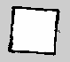

1. Overview
SLAM with cartographer requires laser scan data for robot pose estimation. Intel® RealSense™ depth cameras can generate depth image, which can be converted to laser scan with depthimage_to_laserscan package, therefore, we provide a way to use RealSense™ for SLAM and navigation.
2. SLAM with RealSense™
Disable the laser scan from turtlebot3 LDS
By default, turtlebot3 cartographer uses the laser scan from the inherent 360 LDS, so it's necessary to disable that first.
vim ~/robot_sdk/sdk_ws/device_ws/src/turtlebot3/turtlebot3/turtlebot3_node/src/node_main.cpp
please comment out the following codes: line 57
laser_scan_pub_ = this->create_publisher<sensor_msgs::msg::LaserScan>(ScanTopic, rmw_qos_profile_default);
line 69 - 75
auto laser_scan_callback =
[this](const sensor_msgs::msg::LaserScan::SharedPtr laser_scan) -> void
{
this->lidar_->makeFullRange(laser_scan);
};
laser_scan_sub_ = this->create_subscription<sensor_msgs::msg::LaserScan>(ScanHalfTopic, laser_scan_callback);
line 93 - 99
laser_scan_timer_ = this->create_wall_timer(
ScanPublishPeriodMillis,
[this]()
{
this->laser_scan_pub_->publish(this->lidar_->getLaserScan(this->now()));
}
);
line 134
rclcpp::Subscription<sensor_msgs::msg::LaserScan>::SharedPtr laser_scan_sub_;
line 139
rclcpp::Publisher<sensor_msgs::msg::LaserScan>::SharedPtr laser_scan_pub_;
Next, it needs to re-build the turtlebot3_node to enable the modification
source /opt/robot_sdk/robot_sdk_setup.bash
cd ~/robot_sdk/sdk_ws/device_ws
colcon build --packages-select turtlebot3_node
Adapt the turtlebot3 robot model
The example here is based on the turtlebot3 model of waffle. If another RealSense™ RGB-D camera(e.g D435) is used, please remove the original R200 camera and mount the new RealSense™ camera at the same place of R200 on the turtlebot3 waffle chassis and override the following waffle model description
source /opt/robot_sdk/robot_sdk_setup.bash
cp -v ~/robot_sdk/products/tb3/device/urdf/turtlebot3_waffle.urdf.xacro <the-path-of-turtlebot3>/turtlebot3_description/urdf/turtlebot3_waffle.urdf
colcon build --symlink-install --packages-select turtlebot3_description
Resolve the package conflict of FastRTPS
Turtlebot3 depends on Micro-DDS which requires to build with a dedicated commit from FastRTPS, however, the ROS2 core has already built a FastRTPS package, it results in the laser scan derived from RealSense™ depth gotten lost if those two different FastRTPS used. So it needs to work around them into the same FastRTPS package, which is the one from ros2 core. Please change the code with the following steps:
# modify the Micro-XRCE-DDS-Agent's source code to build with the ROS@ FastRTPS package
vim ~/Micro-XRCE-DDS-Agent/src/cpp/Root.cpp
change the line 34-46 to
Root::Root()
: mtx_(),
clients_(),
current_client_()
{
current_client_ = clients_.begin();
/* Load XML profile file. */
fastrtps::xmlparser::XMLProfileManager::loadDefaultXMLFile();
}
and re-build the package
cd ~/Micro-XRCE-DDS-Agent/build
cmake ..
sudo make install
Convert RealSense™ depth to laser scan
source /opt/robot_sdk/robot_sdk_setup.bash
git clone https://github.com/ros-perception/depthimage_to_laserscan.git -b ros2
colcon build --symlink-install --packages-select depthimage_to_laserscan
ros2 launch realsense_ros2_camera realsense2_to_laserscan.py
Tune the cartographer configuration
At present, high ratio sampling rate of odometry drifts the map building, please change it accordingly.
vim <the-path-of-turtlebot3>/turtlebot3_cartographer/config/turtlebot3_lds_2d.lua
change the line 41 to
odometry_sampling_ratio = 0.5,
and re-build the package turtlebot3_cartographer if it's already been built before.
Start to SLAM
# In terminal 1
cd ~/turtlebot3 && MicroXRCEAgent serial /dev/ttyACM0
# In terminal 2
source /opt/robot_sdk/robot_sdk_setup.bash
export TURTLEBOT3_MODEL=waffle && ros2 launch turtlebot3_bringup robot.launch.py
# In terminal 3
source /opt/robot_sdk/robot_sdk_setup.bash
export TURTLEBOT3_MODEL=waffle && ros2 run turtlebot3_teleop teleop_keyboard
# In terminal 4
source /opt/robot_sdk/robot_sdk_setup.bash
ros2 launch turtlebot3_cartographer cartographer.launch.py
Control and move the turtlebot3 with keyboard to build map, and when the map building process is done, please save the map with the following command:
# In terminal 5
source /opt/robot_sdk/robot_sdk_setup.bash
ros2 run nav2_map_server map_saver -f ~/map
Next, try to open and preview the map.pgm to confirm it. The following is a map built with RealSense™ and cartographer:
Additionally, the one with LDS is as follows:

3. Navigation with RealSense™
Generally, In order to navigation with the map from SLAM with RealSense™, the ros2 navigation stack should be built and ready to use.
Bringup the turtlebot3
# In terminal 1
cd ~/turtlebot3 && MicroXRCEAgent serial /dev/ttyACM0
# In terminal 2
source /opt/robot_sdk/robot_sdk_setup.bash
export TURTLEBOT3_MODEL=waffle && ros2 launch turtlebot3_bringup robot.launch.py
Start ROS2 realsense and depth image to laser scan
# In terminal 3
source /opt/robot_sdk/robot_sdk_setup.bash
ros2 launch realsense_ros2_camera realsense2_to_laserscan.py
Read and distribute map with map server
# In terminal 4
source /opt/robot_sdk/robot_sdk_setup.bash
ros2 run nav2_map_server map_server -f ~/map
Start the navigation2 stack with the map
# In terminal 5
export TURTLEBOT3_MODEL=waffle
ros2 launch turtlebot3_navigation2 navigation2.launch.py map:=${HOME}/map.yaml
Finally, please give an initial pose and goal within RVIZ2 to direct and navigate the turtlebot3 with the running map.
4. Known issues
* The accuracy of RealSense™ depth depends on the detection distance and the quality may not good enough to build a big map, it drifts the map building.
* Keep the RealSense™ parallel to the ground, or the tilt of the RealSense™ may influence the SLAM.